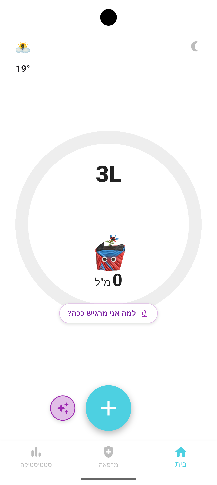

עץלי היא לא עוד אפליקציית מים. לגדל עץ אלון, לנתח ארוחות עם בינה מלאכותית, ולקבל יעדים המותאמים אישית למזג האוויר שלך.
* מיועד למכשירי אנדרואיד. עקבו אחרי העדכונים!

יעד השתייה משתנה אוטומטית לפי הטמפרטורה, הלחות והגשם במיקום שלך.
ה-AI יחשב במדויק כמה נוזלים קיבלת מהארוחה (כולל התחשבות במלחים!).
צלם את הלשון, גב היד, או צבע השתן, והבינה המלאכותית שלנו תעריך את רמת ההתייבשות שלך.
עמוד ביעדים והעץ יצמח. אבל היזהר: חוסר במים ייבש אותו, ויותר מדי מים יגרמו לו לטבוע (הרעלת מים)!
כל מה שרציתם לדעת על גרסת הבטא של עץלי
'עץלי' נמצאת כרגע בגרסת בטא (פיתוח מתקדם). אנחנו רוצים לוודא שהאפליקציה מושלמת לפני שנעלה אותה רשמית ל-Google Play. בקרוב נפתח טופס הרשמה, ומי שיאשר את תנאי הבטא יקבל קישור לקובץ התקנה ישיר (APK). הקובץ בטוח לחלוטין – תוכלו אפילו להעביר אותו סריקה באתר VirusTotal כדי להיות רגועים במאה אחוז.
הפרטיות שלכם היא מעל הכל! כל התמונות שאתם מצלמים במרפאת ה-AI נשלחות ישירות דרך מפתח ה-API הפרטי שלכם אל גוגל. הן לא עוברות דרך השרתים שלנו, לא עולות לענן ציבורי, ונשמרות אך ורק בתוך המכשיר שלכם.
האפליקציה עובדת בשני מישורים: הראשון הוא אלגוריתם מובנה (חינמי לחלוטין וללא צורך באינטרנט), המכיל מאגר מדעי של מקדמי ספיגה למשקאות נפוצים (קפה, תה, אלכוהול וכו'). השני הוא מרפאת ה-AI המתקדמת – שבה ניתן לצלם מאכלים או משקאות מורכבים, והבינה המלאכותית תחשב עבורכם את תרומת הנוזלים נטו.
לא חובה בכלל! האפליקציה מתפקדת נהדר עם האלגוריתם המובנה שלה ללא צורך במפתח. עם זאת, אם תרצו להשתמש בפיצ'רים החכמים (זיהוי תמונה), תוכלו לחבר מפתח אישי בחינם. לגוגל יש מסלול חינמי נדיב, כך ששימוש סביר לא יעלה לכם אגורה.
האפליקציה כרגע נמצאת בשלבי הכנה אחרונים לפני השקת הבטא. בקרוב נפתח את האפשרות למלא טופס הרשמה ולהיות הראשונים שמגדלים את העץ הווירטואלי שלהם לפני ההשקה הרשמית ב-Google Play.